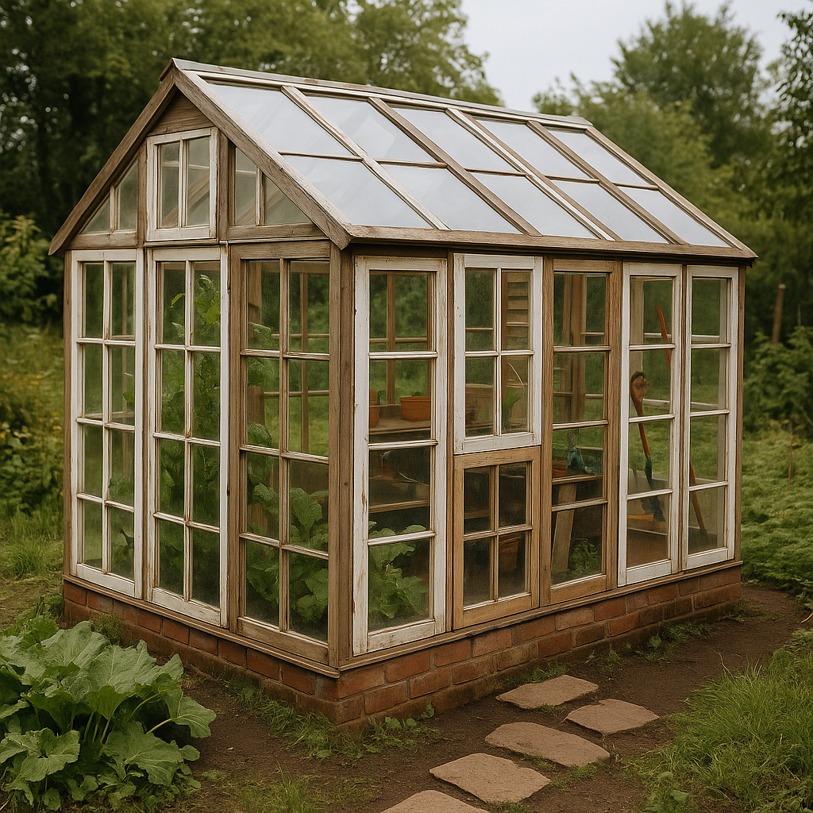

Ehitusmaailmas on taaskasutus muutumas üha olulisemaks. Paljud vanad materjalid, mis varem viidi prügimäele, võivad saada uue elu. Taaskasutamine ei ole mitte ainult keskkonnasäästlik, vaid aitab ka oluliselt vähendada ehituskulusid.
Üks inspireeriv näide on kasvuhoone ehitamine vanadest akendest. Paljud inimesed koguvad vanu aknaid lammutustelt või taaskasutuskeskustest ja panevad neist kokku omapärase ja funktsionaalse kasvuhoone. Tulemuseks on mitte ainult praktiline, vaid ka esteetiliselt huvitav lahendus.
Oluline on enne taaskasutust hinnata materjali seisukorda ja ohutust. Näiteks vanades akendes võib olla pliiühenditega värvi, mida ei tohi kasutada siseruumides.
Paljud materjalid on leitavad:
Taaskasutamine ehituses on lihtne viis anda oma projektile isikupära, säästa raha ja vähendada ökoloogilist jalajälge.